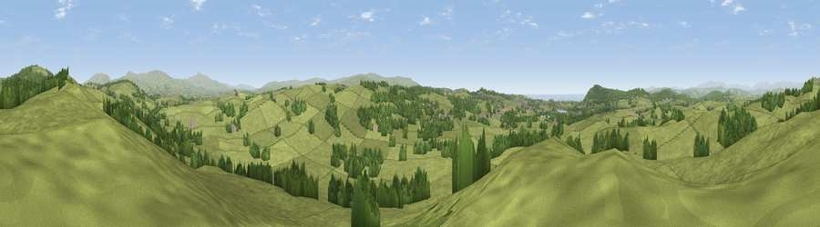

Viewpoint near Priest Hutton
#8189 in England · top 29% of its area beats it · near Priest HuttonWhere it is
The exact computed spot (SD 54475 73575). Click the marker for map links.
The view, rendered

A 360° render of this exact spot computed from the terrain model, tree cover and land cover — summer colours, afternoon light, calibrated against photographs of famous viewpoints. Real trees, hedges and buildings will differ in detail.
The panorama
Grey silhouette: terrain skyline in each direction (720 bearings, Earth curvature and refraction included). Dashed green: skyline with trees (+15 m) and buildings (+8 m) as obstacles. Blue strip: how far the ground is visible on each bearing.
Where the view opens
Wedge length = distance to the farthest visible ground on that bearing (vegetation-aware). Rings at 10, 25 and 50 km.
What fills the view
84% grassland · 14% woodland ·
Angular shares of the visible panorama (visual magnitude), not map area. Landscape diversity 0.22 (0–1 Shannon).
Key numbers
More beautiful places nearby
The staircase of upgrades: each row has a higher view potential than everything closer. Driving times are estimates from straight-line distance, calibrated against real road routing — check an actual route before setting out.
| Place | Direction | Drive | Score |
|---|---|---|---|
| Viewpoint near Priest Hutton | NNE · 0 km | ~1 min | 66.3 |
| Viewpoint near Dalton | NNE · 1 km | ~3 min | 68.3 |
| Viewpoint near Dalton | NNE · 2 km | ~6 min | 68.5 |
| Havelock Hill | S · 3 km | ~7 min | 69.4 |
| Viewpoint near Dalton | NNE · 4 km | ~9 min | 73.0 |
| Viewpoint near Over Kellet | SSW · 5 km | ~11 min | 77.4 |
| Warton Crag | W · 5 km | ~12 min | 83.2 |
| Viewpoint near Grange-over-Sands | WNW · 16 km | ~28 min | 83.4 |
54.15596, -2.69860 · source: screening · position refined by local search. Computed location — check access rights before visiting.